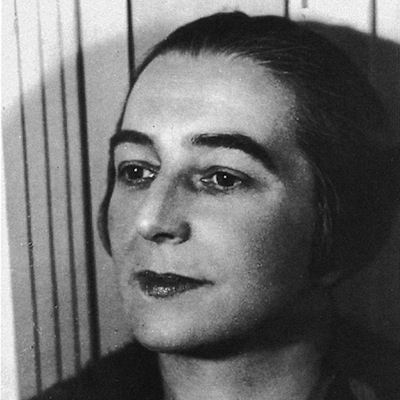

- 
Georgia O'Keeffe
“Finally, a woman on paper!” exclaimed Alfred Stieglitz in 1916, after he looked at Georgia O’Keeffe’s charcoal drawings.
Georgia O'Keeffe (1887-1986) is an American artist who attended the Art Institute of Chicago and a year later went to study at the Art Students League of New York. O’Keeffe first came to the attention of the New York art community in 1916. She made large-format paintings of enlarged blossoms, presenting them close up as if seen through a magnifying lens, and New York buildings, most of which date from the same decade. Beginning in 1929, when she began working part of the year in Northern New Mexico—which she made her permanent home in 1949—O’Keeffe depicted sun-bleached animal bonesand the rugged mountains that dominate that terrain. O’Keeffe has been recognized as the Mother of American Modernism.
In 1985 she received the Medal of the Arts from President Ronald Reagan.
Kay Sage
The American Surrealist painter Kay Sage (1898-1963) made dreamlike, architectural structures bathed in a sulfuric light the hallmark of her painted imagery. In so doing, she set her work apart from all other artists championed by Surrealism’s founder, the French poet Andre Breton. In rejecting the biomorphic forms so prevalent in abstract Surrealist imagery, and in particular those characterized by the work of her husband, Yves Tanguy
, Sage did much more than carve out a niche in the pantheon of Surrealist imagery: she also created a historical position for her work. Sage was a member of the Golden Age, and later the Post-War periods of surrealism, she is mostly recognized for her artistic works, which typically contain themes of an architectural nature.
Frida Kahlo
Frida Kahlo (1907-1954) was a Mexican painter, born in Coyoacán. Perhaps best known for her self-portraits
, Kahlo's work is remembered for its "pain and passion", and its intense, vibrant colors. Her work has been celebrated in Mexico as emblematic of national and indigenous tradition, and by feminists for its uncompromising depiction of the female experience and form.
Mexican culture and Amerindian cultural tradition figure prominently in her work, which has sometimes been characterized as Naïve art or folk art. Her work has also been described as "surrealist", and in 1938 one surrealist described Kahlo herself as a "ribbon around a bomb".
During her lifetime, Frida created some 200 paintings, drawings and sketches related to her experiences in life, physical and emotional pain and her turbulent relationship with Diego Rivera. She produced 143 paintings, 55 of which are self-portraits. When asked why she painted so many self-portraits, Frida replied: “Because I am so often alone....because I am the subject I know best.”